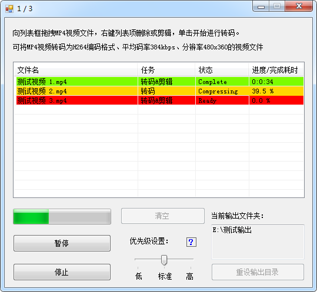

MyCompressor
帮助您更直观地将视频转换为H264、360p、平均384kbps的mp4文件
项目主页：
git.coding.net/InJeCTrL/MyCompressor.git
https://github.com/InJeCTrL/MyCompressor.git
|  |
拖拽文件至列表，右键列表项进行详细操作。
列表显示文件名、任务、状态、进度。
支持优先级调节，可重新选择输出文件夹。
| 外壳程序版本: 1.0.3 | (仅提供20180816版FFmpeg，如需更新版本请前往FFmpeg官网) |
|
MyCompressor只是一款调用FFmpeg的外壳程序，采用C#编写，基于.NET 4.5。 使用时请将FFmpeg与MyCompressor.rar中的所有文件放置在同一目录下！ |
|
更新日志：
|
|